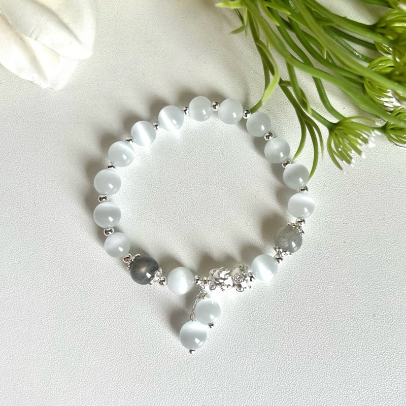

₮38,000
Муурын нүд: Чулууны ер бусын чадвар гэвээс эзэмшигчийнхээ зөн совинг нь хурцалж, харааны авьяасыг нээдэг. Аюулыг зайлуулж сөрөг энергиэс хамгаалдаг. Аз завшааныг татаж, санхүүгийн асуудалд амжилтанд хүрэх боломжийг олгодог. Хэрэв та зорилгодоо хүрэхийг хүсвэл чулууг сахиус болгон ашиглаж болно. Үүгээр зогсохгүй чулуу нь эзэмшигчдээ өөртөө итгэх итгэлийг төрүүлж, эргэн тойрныхоо хүмүүстэй зөв харилцаа тогтоох гарц гаргалгааг бий болгоход тусалдаг.
БУЦАХ